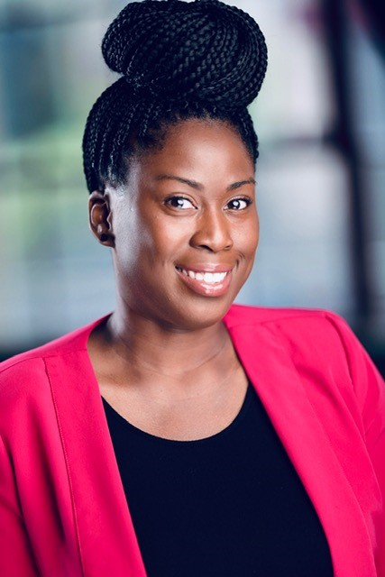

About Me
Hello welcome to my website! My name is Denise Quarles. I attended UNC-Charlotte in Charlotte, NC for undergrad and graduate school where I earned a B.A. in Computer Science and a Master of Science in Information Technology. I have over fifteen years of experience working in Information Technology. Over the course of my career in Information Technology, I have worked worked for Family Dollar Stores, Macys Systems and Technology, and Wells Fargo. My focus areas have been IT Security, PMO, and Change Management. I currently work at GE Digital on the Change Management team. My current focus consists of working with teams to plan changes that are implemented with minimizing impact to the business. I work with teams to educate them on change management best practices. I facilitate CAB meetings to schedule the changes. I also produce daily reports to communicate changes to senior management.
I hope that you take time to review my portfolio. My contact information can be found on my Contact page. Once again, thank you for visiting my website.